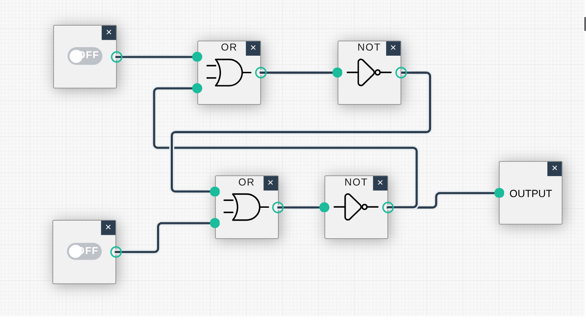

A flip-flop is a circuit that produces an output value of 0 or 1, which remains constant until a pulse (a temporary change to a 1 that returns to 0) from another circuit causes it to shift to the other value. In other words, the output will flip or flop between two values under control of external stimuli. As long as both inputs in the circuit remain 0, the output (whether 0 or 1) will not change. However, temporarily placing a 1 on the upper input will force the output to be 1, whereas temporarily placing a 1 on the lower input will force the output to be 0.
